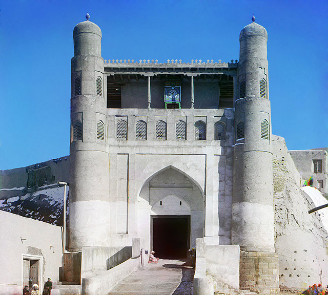

The Lyuli (Mughat): a history of Central Asia's little-studied community
For centuries a distinctive community has lived in Central Asia — in the Fergana Valley, Samarkand, Bukhara and Tajikistan: a people who call themselves "Mughat" and whom others call "Lyuli" or "Jughi." They are often called "Central Asian Roma (Gypsies)," but their link to the European Roma is debated. This article sets out the community's names, origins, language, religion, Soviet-era settlement and present situation — based solely on reliable sources, free of stereotypes and with respect. Uncertain information is marked separately.

Among the least-studied and most marginalized communities in Central Asia's multi-ethnic history are a people who call themselves "Mughat." Local residents and Russian-language sources call them "Lyuli" (Люли), and in Tajikistan "Jughi"; some of these names are regarded as derogatory by the community itself. This article sets out their history solely on the basis of reliable sources, without stereotypes; uncertain or contested information is indicated separately.
Their names and who they are
The community's own name (endonym) is "Mughat." Terms such as "Lyuli," "Jughi," "Multoni" and "Ghurbat" are names given from outside (exonyms). They are often called "Central Asian Roma (Gypsies)," but whether they are truly the same people as the European Roma, or a distinct community grouped under that label, is a debated question among scholars. Some researchers consider them not a branch of the European Roma but a distinct Central Asian community placed under the broad "Gypsy" umbrella.
Origins and distribution
Most scholars trace their distant roots to a westward migration from the Indian subcontinent (sources variously say northern India, Punjab or the Multan area). But this is a widely held theory, not an established fact; the precise origin and the relationship to the European Roma remain debated. The community has been recorded in Central Asia since the medieval period, roughly from the time of Timur (the 14th century). Today they are found in all five Central Asian republics; the largest groups are associated with Uzbekistan (historically the Fergana Valley, Samarkand, Bukhara), Tajikistan and southern Kyrgyzstan.

Language and religion
Most Mughat are multilingual: they speak Tajik (Persian) and/or Uzbek, with Russian common among older people. Among themselves they use a special argot called "lavzi mughat" (an in-group, secret vocabulary) — a special tongue built on a Persian/Tajik grammar with Indo-Aryan words. In religion they are mainly Sunni Muslims, belonging to the Hanafi tradition dominant in the region — an important feature distinguishing them from most European Roma.
Traditional occupations (historical description)
Historical trades recorded in the ethnographic literature include itinerant crafts and trade, petty commerce, craftwork (wood, metal, jewellery) and women doing needlework for other women. These are descriptions of the past, not of people today: modern Mughat are settled and work in diverse fields such as education, manufacturing, small business and seasonal labour. It should be stressed that some patterns found in historical sources are often stereotypes and should not be taken as fact.
The Soviet era: sedentarization
From the mid-1920s Soviet nationality policy sought to settle nomadic groups and allocate them land, but local authorities were slow and reluctant to settle the Lyuli/Jughi. Across the USSR "Gypsy collective farms" and cooperatives were established; in Central Asia they were directed toward cotton growing (one scholarly source cites 13 such collective farms by 1937 — a figure resting on a single source). As a result the community gradually became almost entirely settled and integrated into Soviet structures, often at their margins. This occurred within the broader, harsh context of the collectivization and forced sedentarization of the 1930s.
Their situation today
Population figures are unreliable and contested, because much of the community does not take part in state registers and many lack documents. In Uzbekistan the figure often cited is ~12,000–20,000; in Tajikistan the 2010 census recorded only 2,234 people, yet local officials in just two districts counted more than 4,500 — meaning the census undercounts. The honest summary is "in the tens of thousands, but genuinely uncertain." The community is among the most marginalized in the region, facing poverty, low educational attainment, lack of documentation and discrimination. According to Minority Rights Group, in Kyrgyzstan about 60% of Mughat lack official identification and about 30% of their children have no birth certificate. From the 1990s some of them (especially from Tajikistan and Uzbekistan) migrated to Russian cities, appearing around stations and markets.
Important note
This is historical and ethnographic information, not an evaluation or generalization. Population figures and some historical details about the community (for example, the Indian origin, the number of collective farms) are unreliable or rest on a single source and are marked as such. Any people should be described not through stereotypes but only through confirmed facts.

Sources
- Minority Rights Group — The Mugats of Kyrgyzstan: Resistance amid adversity (kelib chiqishi, chekkalanish, hujjatsizlik statistikasi: ~60% / ~30%)
- Novastan — Who are Central Asia's Lyuli/Mughat? (tadqiqotchi Kamilla Zakirova bilan suhbat: roma-munozarasi, til, din)
- Marushiakova, E. & Popov, V. — Gypsies of Central Asia and the Caucasus (Palgrave Macmillan, 2016): sovet oʻtroqlashtirishi, kolxozlar, Rossiyaga migratsiya
- CABAR.asia — Natives of India. Who Are Tajik Gypsies? (roʻyxatda kam koʻrsatilish, Tojikistonda hujjat muammolari)
- Encyclopedia of World Cultures (everyculture) — Gypsies: Orientation (lavzi mugʻat argosi, 1970-yil roʻyxat raqamlari)